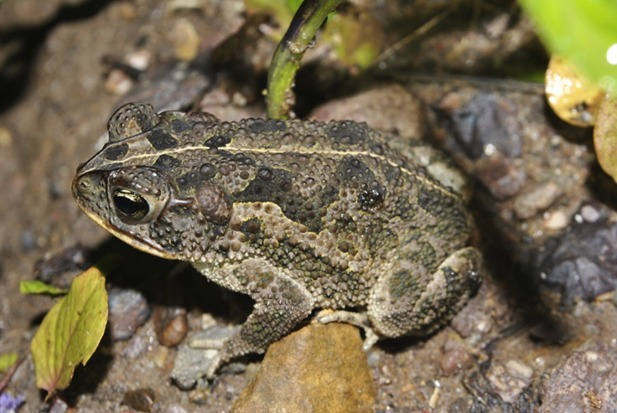
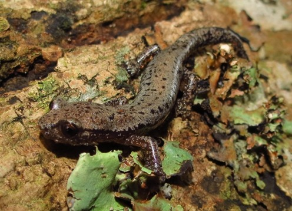
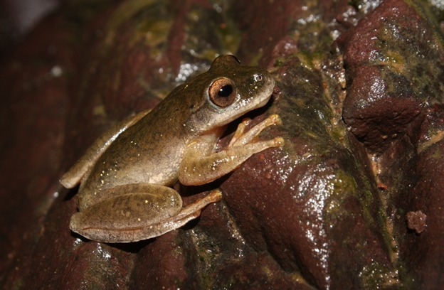

Los machos de esta especie llegan a medir 60 mm, mientras las hembras alcanzan hasta los 82. Se alimenta
de una gran cantidad de invertebrados, como arañas e insectos rastreros. Se distingue por sus crestas
craneales prominentes y sus glándulas parótidas, relativamente pequeñas y redondeadas.
Es una especie de color variable y sus larvas se desarrollan con gran rapidez (en menos de tres meses), pues
generalmente los charcos, pozas o piletas donde se reproduce son estacionarios y desaparecen en época seca.
Nombre científico: Incilius coccifer.
Habitad: Bosque húmedo y seco de tierras bajas, así como zonas antropogénicas como
pastizales, jardines y zanjas.
Especie: Anfibios.
Origen: sur de México (sur del istmo de Tehuantepec, Oaxaca, Chiapas), vertiente del
Pacífico de Guatemala, El Salvador, Honduras, Nicaragua y Costa Rica.

Este tipo de anfibios no representan peligro para los humanos, porque no poseen veneno, respiran
por medio de la piel lo que los hace altamente sensibles.
Otra característica de la especie es que poseen un desarrollo directo, es decir, no pasan por un estado
larvario como otras de salamandras. .Está amenazada de extinción debido a la destrucción de su hábitat.
Nombre científico: Bolitoglossa heiroreias.
Habitad: montanos húmedos tropicales o subtropicales.
Especie: Anfibios.
Origen: Parque nacional Montecristo del noroeste de El Salvador, y en la zonas adyacentes de Guatemala y Honduras.

Las ranas arbóreas suelen ser pequeñas, ya que su peso debe ser soportado por las ramas y ramitas de su hábitat. Mientras
que algunas alcanzan 10 cm (4 pulgadas) o más, son típicamente más pequeñas y delgadas que las ranas terrestres.
Típicos de las "ranas de árbol" son los discos de succión bien desarrollados en las puntas de los dedos; los dedos, así como
los miembros, tienden a ser bastante pequeños, lo que resulta en una capacidad de agarre superior .La especie está amenazada
por la destrucción de hábitat y los efectos de la quitridiomicosis.
Nombre científico: Ptychohyla salvadorensis.
Habitad: Bosque húmedo premontano donde vive en el sotobosque en la cercanía de cursos de agua.
Especie: Anfibios.
Origen: Es nativo de El Salvador, Guatemala y Honduras.